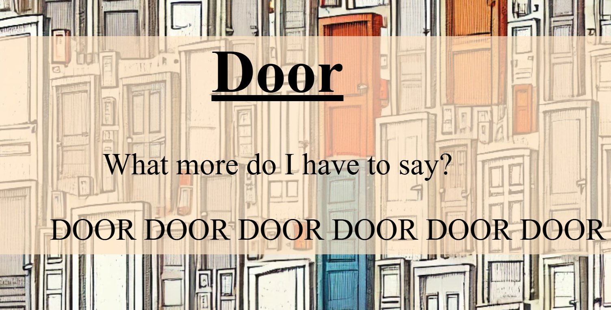
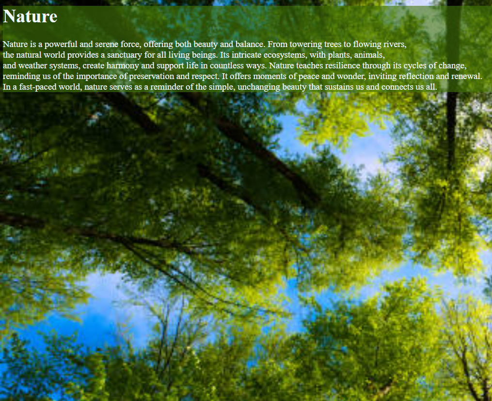
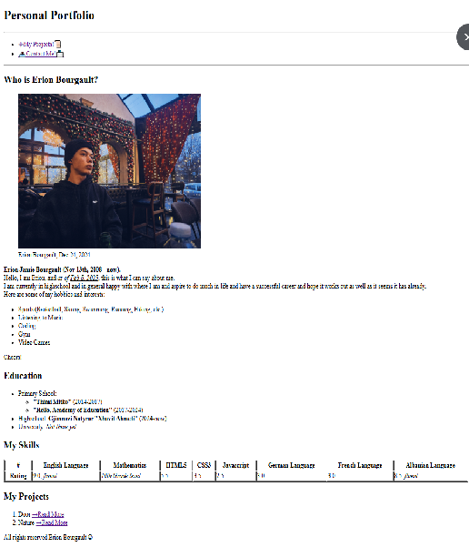

Project 1
This project is a simple and meaningless but fun little project that I made while practicing coding focusing on HTML and CSS.

Project 2
This is the second project made to talk about nature briefly and for me to explore coding and practice CSS. Why not?

Project 3
This is my most recent project and my favorite so far, that I worked the most on and I actually like.
